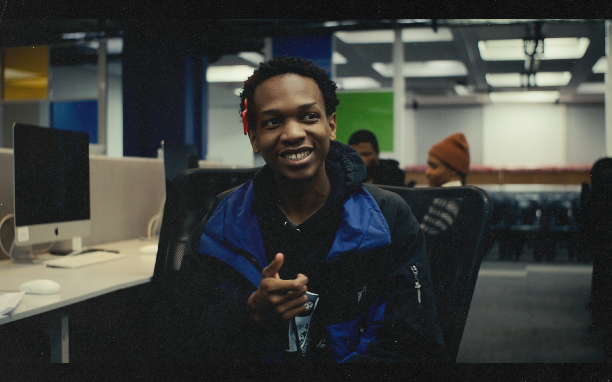

uAmahle Cele
Software Engineering student @ WeThinkCode_.
About me
Sanibonani, my name is Amahle Cele, currently studying a Diploma in Software Engineering at WeThinkCode_. My initial background is in the humanities holding a Bachelor of Arts in Film and Television from the University of the Witwatersrand.
Projects
-
Velaphi
Velaphi is a Fullstack Web Application built for learning more about your family clan names and relevant history.
View Website Here -
iBafana Bafana & the Fifa World Cup
A webite tracking South Africa's national football team's performance and stats at the FIFA World Cup, from their debut in 1998 onwards.
View Website Here -
CIBYC
Full-stack web app for WeThinkCode_'s content club. It lets members view images remotely and store them locally as the camera takes them.
Certifications
- CS50's Introduction to Programming with Python
- Introduction to IoT — Cisco Networking Academy